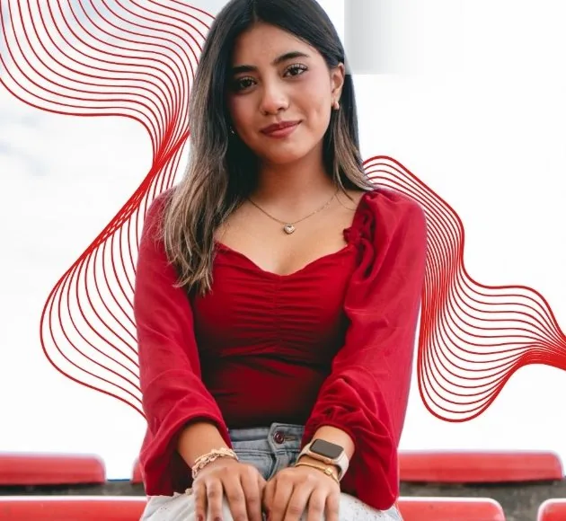
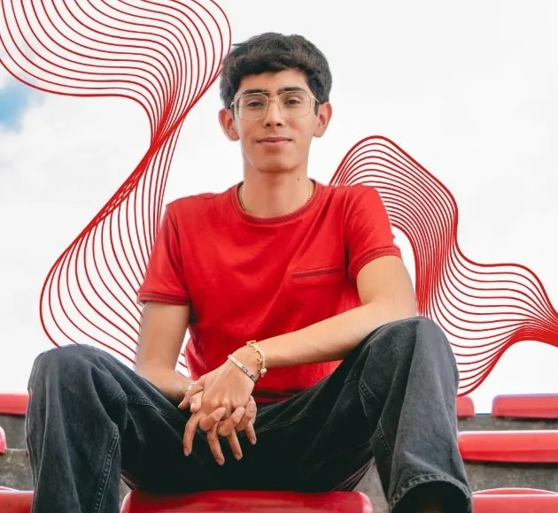
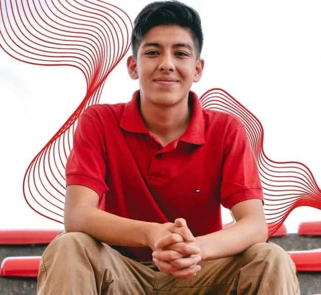

Sociedad de alumnos · Prepa 9 UdeG
Identidad
Por una verdadera representación estudiantil
¡Porque la empatía es revolución!



Esto somos
Sociedad de alumnos de la Prepa 9
Somos estudiantes que creen que la representación se hace escuchando. Trabajamos de estudiantes y para estudiantes: seguridad, bienestar, deporte, cultura y talento.
Identidad nació de la idea de que el Consejo de Escuela debe parecerse a quienes estudian en él. Somos la sociedad de alumnos de la Preparatoria 9 y nos presentamos con una planilla roja —el color de nuestra revolución— en los turnos matutino y vespertino.
Nuestro lema es "Por una verdadera representación estudiantil", y nuestro compromiso, ir con todo y contra todos por lo que importa a la comunidad.
- Empatía. Escuchar primero, decidir después.
- Representación real. De estudiantes y para estudiantes.
- Transparencia. Cuentas claras con la comunidad.
- Inclusión. Todas y todos tenemos lugar en la prepa.
- Seguridad y bienestar. Una escuela donde se pueda estar tranquilo.
Nuestro programa de acción se organiza en cuatro ejes. Las propuestas completas están en la sección de abajo.
- Seguridad: botón de pánico, senderos seguros, alumbrado y primeros auxilios.
- Bienestar: atención psicológica gratuita, enfermería y cuidado del ambiente.
- Talento y convivencia: deporte, arte, cultura, ciencia y tecnología.
- Voz estudiantil: buzón directo, consejo transparente y apoyo con becas.
- Identidad es una sociedad de alumnos de la Preparatoria 9 de la UdeG, abierta a toda su comunidad estudiantil.
- Sus decisiones se toman de forma colectiva y buscan siempre el beneficio de las y los estudiantes.
- Sus integrantes actúan con respeto, empatía y honestidad.
- Las propuestas se informan públicamente y se rinde cuentas de su avance.
- Cualquier estudiante puede sumarse, participar y proponer.
Nuestro plan
Propuestas
Un plan pensado por y para ti. Filtra por tema o por grupo.
Planilla roja
Dirigencia y candidatos
Conoce a quienes van al Consejo Escuela. Con todo y contra todos.
También en el proyecto: Brenda Orozco (turno matutino) y Valeria Vela (turno vespertino).
Síguenos y súmate
Aquí publicamos propuestas, eventos y todo lo que vamos logrando.